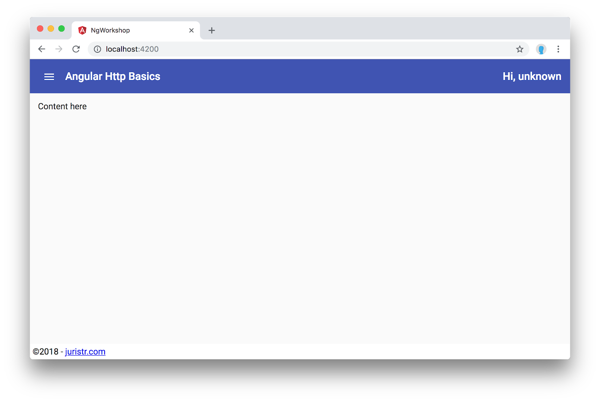

Every serious single-page application needs to interact with some API in order to retrieve the data it wants to visualize to its users. While we could simply use the native browser APIs for executing HTTP requests (such as fetch), Angular comes with its built-in Http client.
What you'll learn
- What async programming means in the frontend space
- RxJS and how its Observables differ from Promises
- Setting up the Angular Http client with your Angular App Module
- Interacting with the server API issuing
GET,POST,PUT,DELETErequests - How to pass additional metadata such as query params and headers
- How to read the HTTP response object
- How to bind data to the component template
What you'll need
- A valid code editor, ideally Visual Studio Code
- Git and a recent version of Node (v9+) and NPM (v5+)
Download the Code
Click the following link to download all the code for this codelab:
Unzip the code and open it with Visual Studio Code (or your respective code editor of choice).
Install npm packages and start the app
After unpacking the files, open up a terminal (you can also do that from within Visual Studio Code) at the location where you unzipped your files.
Execute npm install to download all the necessary packages.
Launching the JSON API server?
Open your terminal (also from within VSCode) and type
$ npm run start:serverThis will launch a JSON server which we will use as our fake backend in order to be able to perform HTTP requests. Once the server is running, go to http://localhost:3000 and you should see the following screen.

Also, opening http://localhost:3000/api/people should get you a JSON response of people.
Launching the Angular Development Server?
Open your terminal and type
$ npm startThis is a shortcut for npm run start and is mapped in your package.json to ng serve which will launch the local Angular CLI development server. Open your browser at http://localhost:4200. You should see the following screen:

If you navigate to http://localhost:4200/api/people you should get the same result as navigating to http://localhost:3000/api/people. The main reason for this behavior is that
- http://localhost:3000 - is our fake JSON server which delivers our API. In a real world development setup, this would be your backend API service
- http://localhost:4200 - is our Angular CLI development server, that pipes all requests to /api/... to our API server.
We've set up a proxy configuration to pipe through API requests, to avoid having to implement CORS on our API. If your API is already exposing CORS headers, you obviously don't have to setup any kind of proxy.
The proxy configuration can be adjusted in the proxy.conf.json file at the root of our Angular CLI project and loaded by our npm start command using the --proxy-config flag.
{
"/api/*": {
"target": "http://localhost:3000",
"secure": false,
"logLevel": "debug"
}
}In this first step, let's configure the HttpClientModule, in order to be able to access Angular's http services from within our app.
Open your app.module.ts and import the HttpClientModule from @angular/common/http.
...
import { HttpClientModule } from '@angular/common/http';
@NgModule({
declarations: [AppComponent],
imports: [
...
HttpClientModule
],
providers: [],
bootstrap: [AppComponent]
})
export class AppModule {}Do we need to import the HttpClientModule in every module where we want to use Angular's http services?
Or is it enough to register it once in our AppModule? Yes, it's enough to register it there. The reason is that the HttpClientModule only provides Angular services, which, once registered automatically exist on the global scope. Thus all of our other Angular modules will be able to inject http services coming from the HttpClientModule, without having to actually import it on their own.
Use the Angular CLI to generate a new service.
$ ng g s people --spec falseWe use the --spec false to not generate unit tests for our simple example. That's the topic of another codelab.
Let's inject the HttpClient into the constructor of our newly created PeopleService.
import { Injectable } from '@angular/core';
@Injectable({
providedIn: 'root'
})
export class PeopleService {
constructor() { }
}Once we have that, we can create a new function getPeople() and issue a GET request to /api/people.
import { Injectable } from '@angular/core';
import { HttpClient } from '@angular/common/http';
@Injectable({
providedIn: 'root'
})
export class PeopleService {
constructor(private http: HttpClient) {}
getPeople() {
return this.http.get('/api/people');
}
}We should also add some types to our Person object. For now, create a new TypeScript interface in the PeopleService. A Person has the following properties:
idwhich is the primary key in our database (it can be null in case when the person has not yet been saved)namewhich is the name of the personwebsiteandtwitterhandle
...
export interface Person {
id?: number;
name: string;
website?: string;
twitter?: string;
}
Adjust the HTTP function to use the TypeScript types
Since we now have a type defined for the return value of our API, let's also use it. Angular's HttpClient supports generic types.
...
export class PeopleService {
constructor(private http: HttpClient) {}
getPeople() {
return this.http.get<Person[]>('/api/people');
}
}Note, while we could also specify the return type of getPeople() as Observable<People[]>, it is not necessary. TypeScript has a mechanism called type inference and thanks to which return type will be inferred automatically.
In order to visualize the list of people, we subscribe to the getPeople() function we just created, from within our AppComponent.
First of all need to get a reference to our PeopleService. We'll do this using Angular's dependency injection mechanism.
import { Component, OnInit } from '@angular/core';
import { PeopleService } from './people.service';
@Component({
selector: 'app-root',
templateUrl: './app.component.html',
styleUrls: ['./app.component.css']
})
export class AppComponent {
constructor(private peopleService: PeopleService) {}
}Next we implement the OnInit lifecycle event which is usually the place where you initialize your component and fetch the data to be visualized.
import { Component, OnInit } from '@angular/core';
import { PeopleService } from './people.service';
@Component({
selector: 'app-root',
templateUrl: './app.component.html',
styleUrls: ['./app.component.css']
})
export class AppComponent implements OnInit {
constructor(private peopleService: PeopleService) {}
ngOnInit(): void {
}
}In the OnInit we can now call the getPeople() function and subscribe to it. For now, simply print it to the browser console and verify the data is retrieved correctly.
ngOnInit(): void {
this.peopleService.getPeople().subscribe(x => console.log(x));
}Also, try what happens when you just call getPeople() without using the .subscribe() operator. Do you see a request being made in the Browser's Devtools' network tab?
Rendering the data
Finally, we obviously want the data to be displayed to the user. To do so, we simply assign the result of our HTTP call to a component variable, people.
...
export class AppComponent implements OnInit {
people: Person[];
...
ngOnInit(): void {
this.peopleService.getPeople().subscribe(x => {
this.people = x;
});
}
}Then, let's open the app.component.html template and render the data properly. Search the "Content here" area and add the following HTML
...
<mat-drawer-content class="app-page-container">
<h1>People</h1>
<div *ngFor="let person of people">
{{ person.name }}
</div>
</mat-drawer-content>We're not going to create a fully fledged CRUD interface for managing our people. But let's create a simple mechanism that allows us to experiment with adding new people to our list.
Add the following piece of UI directly in our app.component.html under the <h1>People</h1> section.
<mat-form-field>
<input matInput placeholder="Person name" #personName>
</mat-form-field>
<button mat-raised-button color="primary" (click)="createPerson(personName.value)">Create</button>
<hr />Next, in our app.component.ts file we create a new function that will be called when clicking the "Create" button.
@Component({ ... })
export class AppComponent implements OnInit {
constructor(private peopleService: PeopleService) {}
ngOnInit(): void { ... }
createPerson(name: string) {
console.log('new person', name);
}
}Implement the POST function in our PeopleService
We're now ready to implement the according createPerson(...) function that will call the backend and create a new person.
@Injectable({
providedIn: 'root'
})
export class PeopleService {
constructor(private http: HttpClient) {}
...
createPerson(aPerson: Person) {
return this.http.post<Person>('/api/people', aPerson);
}
}The post function takes <Person> as a type because that will be the return type we get from the server after a successful creation.
Wire everything up in our component
The PeopleService is set up, now we need to wire it to the AppComponent, s.t. When we click the "Create" button, our actual createPerson(..) function is being called with the proper arguments.
Change the createPerson function in our AppComponent to the following.
@Component({ ... })
export class AppComponent implements OnInit {
...
createPerson(name: string) {
this.peopleService
.createPerson({
name: name
})
.subscribe(createdPerson => {
console.log(createdPerson);
});
}
}Try adding some people now. Inspect the network tab of your browser's devtools. Also refreshing the browser will reveal the people you've added.
Editing and/or deleting a person is exactly the same as creating a new person, just that we use the put and delete function of the HttpClient respectively.
To simulate sending parameters to our backend, we will try to create a small, very simple search feature.
Add the following button just after the "Create" button we've created earlier:
<button mat-raised-button (click)="onSearchPerson(personName.value)">Search</button>Also we need to create and implement the onSearchPerson() function. We simply call again the PeopleService, passing our filter criteria to the getPeople function.
@Component({ ... })
export class AppComponent implements OnInit {
...
ngOnInit(): void {
this.initList();
}
initList() {
this.people = this.peopleService.getPeople();
}
createPerson(name: string) { ... }
onSearchPerson(name: string) {
if (name) {
this.people = this.peopleService.getPeople({ name: name });
} else {
this.people = this.peopleService.getPeople();
}
}
}Obviously this doesn't yet work, we also need to adjust our getPeople(..) function of the PeopleService.
Change the PeopleService implementation
We need to adjust the getPeople() function to take optional parameters and send them to the server. We use the fromObject functionality of the HttpParams.
...
export class PeopleService {
constructor(private http: HttpClient) {}
getPeople(params = {}) {
return this.http.get<Person[]>('/api/people', {
params: new HttpParams({ fromObject: params })
});
}
...
}You should now be able to filter for a person's name. Also inspect the network traffic of your browser's devtools to see how the params are mapped onto the HTTP call.
Intercepting HTTP traffic at a single place is a really powerful mechanism for solving common tasks such as adding authentication headers, logging or even global error handling. Otherwise we would have to change every single HTTP call of our applications.
Let's implement a simple Http interceptor. Generate a new service using the Angular CLI and call it "my-http-interceptor"
$ ng g s my-http-interceptor --spec falseWe need to register the interceptor manually, so we can remove the "providedIn" part of the @Injectable. Also we need to implement the HttpInterceptor interface.
import { Injectable } from '@angular/core';
import {
HttpInterceptor,
HttpRequest,
HttpHandler,
HttpEvent
} from '@angular/common/http';
import { Observable } from 'rxjs';
@Injectable()
export class MyHttpInterceptorService implements HttpInterceptor {
constructor() {}
intercept(
request: HttpRequest<any>,
next: HttpHandler
): Observable<HttpEvent<any>> {
return next.handle(request);
}
}Register the interceptor
In order for the interceptor to have an effect, we need to register it in a special way to the HTTP_INTERCEPTORS. Open the AppModule and go to the providers: [] section.
Register our http interceptor as follows:
...
import { HTTP_INTERCEPTORS } from '@angular/common/http';
import { MyHttpInterceptorService } from './my-http-interceptor.service';
@NgModule({
declarations: [AppComponent],
imports: [
...
HttpClientModule
],
providers: [
{
provide: HTTP_INTERCEPTORS,
useClass: MyHttpInterceptorService,
multi: true
}
],
bootstrap: [AppComponent]
})
export class AppModule {}Next, we are going to modify the request by adding some simple header to it. We need to clone the request, manipulate it and then pass it along to the HttpHandler.
Let's attach an app-language header. In our simple example it is static, in a real-world app you would obviously fetch it from some service.
...
@Injectable()
export class MyHttpInterceptorService implements HttpInterceptor {
constructor() {}
intercept(
request: HttpRequest<any>,
next: HttpHandler
): Observable<HttpEvent<any>> {
const customReq = request.clone({
headers: request.headers.set('app-language', 'it')
});
return next.handle(customReq);
}
}Open the browser's devtools and inspect the network traffic. You should see the header being attached.

The next.handle(..) function of our http interceptor returns an Observable. Thus we can simply subscribe to it and apply all the standard RxJS operators we want. As a result we could simply add a tap operator to log out the responses from the server.
...
import { Observable } from 'rxjs';
import { tap } from 'rxjs/operators';
@Injectable()
export class MyHttpInterceptorService implements HttpInterceptor {
constructor() {}
intercept(
request: HttpRequest<any>,
next: HttpHandler
): Observable<HttpEvent<any>> {
const customReq = request.clone({
headers: request.headers.set('app-language', 'it')
});
return next.handle(customReq).pipe(
tap((ev: HttpEvent<any>) => {
if (ev instanceof HttpResponse) {
console.log('processing response', ev);
}
})
);
}
}Inspecting the Console of the browser devtools we see the result being logged out:

Similarly we could also catch errors in a central place and then handle them accordingly. As an example that could be a redirect to some login screen when we get some 401 or 403 responses from our API, that signal that the authentication session might have expired.
Here's a simple scenario, were we just catch the errors, log them and then throw the error again up the Observable chain.
import { Injectable } from '@angular/core';
import {
HttpInterceptor,
HttpRequest,
HttpHandler,
HttpEvent,
HttpResponse,
HttpErrorResponse
} from '@angular/common/http';
import { Observable, throwError } from 'rxjs';
import { tap, catchError } from 'rxjs/operators';
@Injectable()
export class MyHttpInterceptorService implements HttpInterceptor {
constructor() {}
intercept(
request: HttpRequest<any>,
next: HttpHandler
): Observable<HttpEvent<any>> {
const customReq = request.clone({
headers: request.headers.set('app-language', 'it')
});
return next.handle(customReq).pipe(
tap((ev: HttpEvent<any>) => {
if (ev instanceof HttpResponse) {
console.log('processing response', ev);
}
}),
catchError(response => {
if (response instanceof HttpErrorResponse) {
console.log('Processing http error', response);
}
return throwError(response);
}))
);
}
}You did it!! Quickly go through these questions to check your knowledge. You should be able to answer most of these by now.
Check your knowledge
- What is RxJS?
- What are Observables and how are they different to Promises?
- In which package does the HttpClientModule reside?
- How can we make sure our data returned from the backend properly matches our TypeScript type definitions?
- Can we directly bind Observables in our Angular templates? How can that be achieved?
- How do we pass parameters to an HTTP GET call?
- How do we set HTTP headers?
- How can we handle HTTP errors?
- If you'd like to append an authentication token to each HTTP request that is being made to your backend API. How would you implement such scenario?
- If you'd like to globally handle all HTTP errors that occur (for logging purposes etc..). How would you implement such scenario?